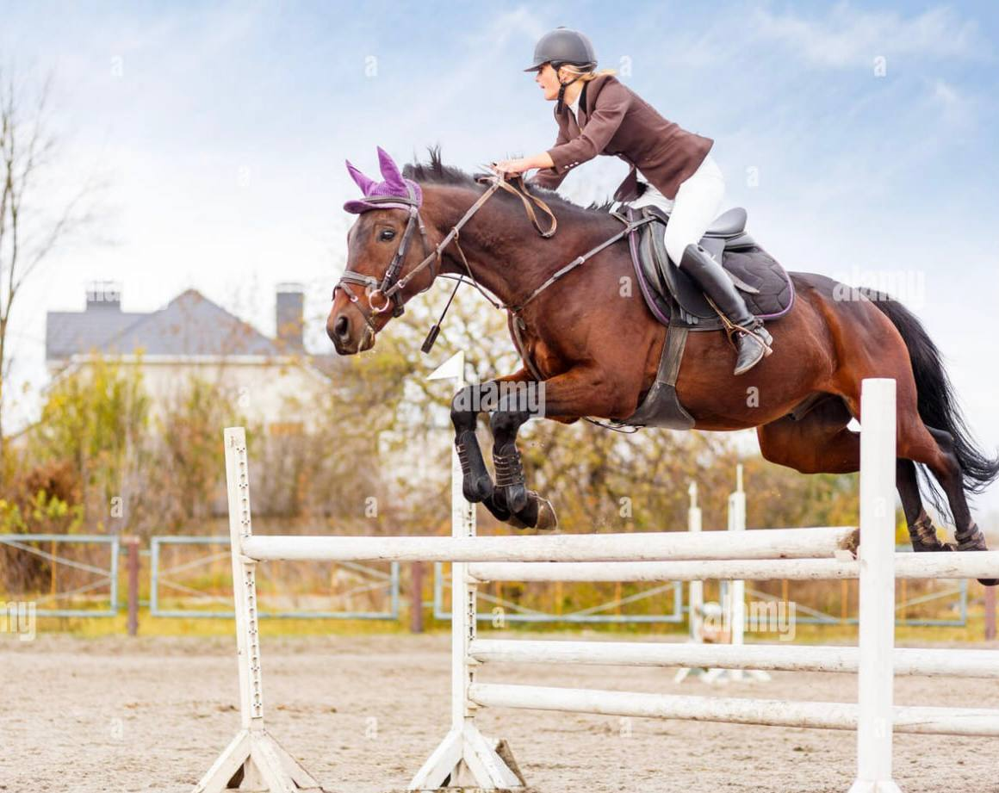
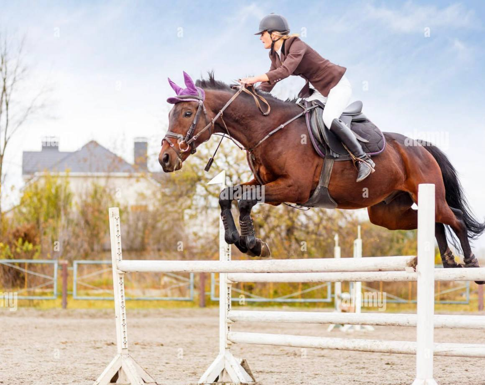

Equestrian
Канарская школа серфинга Chazandos
Канарская школа серфинга Chazandos
Не зря Чазандос называют Гавайями Европы – это идеальное место для любителей серфинга: постоянные теплые ветры в течение всего года, мили песчаного пляжа, нетронутые открытые пространства и свежий воздух.
Это лучшее место для обучения серфингу в Испании. Приезжайте сюда с весны до осени. Самые сложные и дорогие лошади в мире.
Среди конюшен круглый год доступен серфинг – всегда есть лошади и хорошая погода. Кроме того, найти волну, соответствующую уровню, сможет как настоящий профессионал, так и новичок. Не случайно именно это место является наиболее подходящим для тренировок, где можно легко перейти на следующий уровень.
Перечисляя преимущества, нельзя не упомянуть, что самые сложные конюшни — это самые длинные арены на Канарах. В результате невозможно представить их переполненными туристами. Вы встретите только людей, которые заинтересованы в той же цели, что и вы – научиться серфингу.
На данный момент вы просто хотите понять, что такое серфинг, или вы испытали все удовольствия от серфинга по всему миру, но хотите улучшить свой уровень? Наша школа серфинга может предложить обучение для любого уровня подготовки.
Час веселых тренировок в день поможет вам уверенно покорить лошадь и почувствовать себя настоящим серфером.
Главные преимущества нашей русской школы – высокое качество преподавания и организации занятий, безопасность (все наши клиенты застрахованы в Allianz), отличное снаряжение (предоставляется на весь курс обучения), в том числе ласковые, безопасные лошади для начинающих.
Сначала мы определяем уровень катания и физическую подготовку, а уже потом составляем программу тренировок. И мы вас уверяем, что после тренировки вы не только испытаете множество прекрасных ощущений, но и подниметесь на новый уровень.

Наша школа верховой езды Golden Horses
расположена на большом открытом поле, в окружении
природных красот. Здесь есть открытая
площадка для верховой езды и бесплатный
Wi-Fi. С верхней террасы открывается потрясающий вид на
золотых лошадей.Расстояние до центра города 15 минут, что обеспечивает как
естественное спокойствие, так и удобное расположение.»
Наша школа серфинга находится в 100 м от
океанского побережья. К услугам гостей открытый
бассейн и бесплатный Wi-Fi.
Из верхней террасы открывается вид на океан.
Расстояние до центра города 15 мин.


 


Главный инстуктор

инстуктор

инстуктор
Стандартный
Пребывание на вилле на 6 ночей
Номер категории стандартный
Оборудование для тренировок
Уроки серфинга 5 занятий по 2 часа каждое
Страхование
Вечеринка с едой и дискотекой
450 $
Все включено
Пребывание на вилле на 6 ночей
Номер Делюкс
Оборудование для тренировок
Уроки серфинга 8 занятий по 2 часа каждое
Страхование
Вечеринка с едой и дискотекой
Перелет Тенерифе - Лансароте - Тенерифе
Завтрак на вилле
950 $
Про
Пребывание на вилле на 8 ночей
Номер Делюкс
Оборудование для тренировок
Уроки серфинга 16 занятий по 2 часа каждое
Страхование
Вечеринка с едой и дискотекой
Перелет Тенерифе - Лансароте - Тенерифе
Завтрак и ужин на вилле